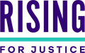

Claude for Legal에 이제 법률 업무용으로 바로 쓸 수 있는 아티팩트가 포함된다. 팀은 이를 자체 데이터와 커넥터로 조정하고, 비즈니스 전반에 공유할 수 있다.
오늘 우리는 법률 전문가가 팀의 일하는 방식에 맞게 조정하고 비즈니스 전반의 동료들과 공유할 수 있는, 바로 쓸 수 있는 아티팩트(artifact)를 소개합니다. 5월에 Claude for Legal을 출시한 이후, 법무팀이 가장 많이 요청한 것은 더 간단한 설정과 동료와 더 쉽게 협업하는 방법이었습니다.
아티팩트는 트래커나 대시보드처럼 팀이 Claude 안에서 사용하고 공유할 수 있는 인터랙티브 도구입니다. 새 법률 갤러리에는 계약서 묶음 검토, 규제 변화 추적, 비즈니스 부서의 법률 요청 접수 같은 특정 업무용 아티팩트가 들어 있습니다. 각 아티팩트는 예시와 함께 열리므로, 법률 전문가는 자기 데이터와 커넥터를 추가하기 전에 작업이 어떻게 구성되는지 먼저 볼 수 있습니다. 모든 답변과 출력물에는 그 출처로 가는 링크가 붙습니다.
또한 우리는 사법 접근성(access-to-justice) 업무를 위한 아티팩트를 만드는 공익 단체와, 미래의 변호사들에게 Claude로 무언가를 만드는 법을 가르치는 법학 교육 프로그램에 자금을 지원하고 있으며, 법률 전문가들이 서로에게서 배울 수 있도록 Legal Ambassadors Program을 시작합니다.
이 아티팩트들을 쓰면 법률 전문가가 자기 문서와 자료를 가져오고, Claude가 1차 작업을 마치며, 변호사가 그 결과에 자신의 판단을 적용합니다. 아티팩트들은 법무팀이 우리에게 가장 자주 이야기한 업무를 다룹니다.
법무팀마다 일하는 방식이 다르고, 아티팩트는 법무팀이 이미 사용하는 시스템과 연결될 때 가장 잘 작동합니다. 법률 전문가는 Claude에게 아티팩트를 팀에 맞게 조정해 달라고 요청하고, 커넥터를 사용해 플레이북이나 리서치 자료를 가져올 수 있으므로 아무도 문서를 수동으로 업로드할 필요가 없습니다.
Claude for Legal을 출시한 이후 우리는 Bloomberg Law, Filevine, Ivo, Legora, Patlytics를 포함해 60개가 넘는 법률 커넥터를 추가했습니다. 전체 목록은 법률 디렉터리에서 확인하세요.
아티팩트는 조직 안팎의 협업을 가능하게 합니다. 법무팀은 비즈니스 전반의 동료나 고객·파트너와 함께 하나의 아티팩트에서 작업할 수 있으며, 공유 설정이 프라이버시를 보장하고 팀 간 정보 차단벽(ethical wall)을 지원합니다.
우리는 리걸테크 기업 및 로펌과 협력해 법률 전문가를 위한 아티팩트를 만들었습니다. 각 아티팩트는 갤러리에 올라 있어 법률 전문가가 찾아보고, 시험해 보고, 자기 업무에 맞게 조정할 수 있습니다.
리걸테크 기업, 로펌, 법률 구조 단체들이 자신만의 아티팩트를 만들고 공유하는 모습을 보게 되어 기대가 크며, Legora와 Orrick의 아티팩트도 곧 추가될 예정입니다.
(원문에서는 아래 고객·파트너 인용문이 18장짜리 슬라이드 캐러셀로 표시됩니다.)
“Claude는 계속해서 우리를 세계에서 가장 널리 쓰이는 계약 검토 도구로 만들어 주고 있습니다. Spellbook을 거쳐 가는 계약서가 한 달에 50만 건에 가까워지고 있는데, Claude가 없었다면 여기까지 오지 못했을 것입니다.”
“The Access Project에서 우리는 법무팀과 본인 소송인(self-represented litigant)이 전과 기록 말소(record clearance) 절차를 헤쳐 나가도록 돕는 도구를 만듭니다. 이 아티팩트를 쓰면 누구나 클린 슬레이트(clean slate) 절차를 시작할 수 있습니다. 자격을 확인하고, 기록을 확보하고, 주법이 각 사건에 어떻게 적용되는지 이해하고, 지역별 제출 안내를 찾을 수 있습니다.”
“시간은 늘 부족하고, 계산에 쓰는 1분은 혐의 너머의 그 사람이 누구인지 살피는 데 쓰지 못하는 1분입니다. Criminal Charge Reality Check 도구는 하나의 질문에서 시작했습니다. 그 부분을 어떻게 더 빠르게 만들어서, 그 시간이 사람에게 가도록 할 수 있을까?”
“Accenture에서 Claude는 우리 법무팀의 일하는 방식을 바꾸도록 돕고 있습니다. 법률 워크플로우를 새롭게 구상하고, 우리 법률 전문가들이 비즈니스를 지원하는 새로운 방법을 열 기회에 기대가 큽니다.”
“Anthropic은 법률 업무에 가장 뛰어난 모델을 만드는 데 많은 투자를 해 왔습니다. 우리는 Claude가 내부 벤치마크에서 동급 최고이기 때문에 Claude로 에이전트를 만들며, Anthropic과 함께 법률 분야의 최전선을 계속 넓혀 가게 되어 기쁩니다.”
“법무는 모든 계약의 중심에 있지만, 그 업무가 비즈니스의 나머지 부분과 단절되어 있는 경우가 너무 많습니다. Anthropic과 함께 우리는 Docusign 플랫폼의 힘을 Claude 안으로 직접 가져와, 법무팀과 여러 부서의 이해관계자가 계약을 작성하고 검토하고 진행시킬 수 있게 합니다.”
“Eve에서 우리는 원고 측 변호사가 실제로 하는 업무로 AI를 측정하기 위해 PlaintiffBench를 만들었습니다. 고객들이 짚어 준 실제 초안, 수정 사항, 엣지 케이스를 사용합니다. 모든 새 모델은 로펌에 닿기 전에 여기서 스스로를 증명해야 하며, Claude Opus 5.5는 진정한 도약을 이뤘습니다. 수백 건의 사건을 동시에 처리하는 원고 측 로펌에게 그 시간은 빠르게 쌓입니다.”
“신체 상해 사건은 한 번에 만들어지지 않습니다. 기록, 메모, 이메일에 걸친 수백 가지의 서로 연결된 판단과 작업을 통해 몇 달에 걸쳐 만들어집니다. Claude는 그 장기간의 작업을 조율하도록 우리가 신뢰하는 프론티어 모델이며, 덕분에 EvenUp은 로펌과 그 고객이 기대하는 수준으로 결과를 낼 수 있습니다.”
“소송은 절대적인 정확성을 요구합니다. 방대한 증거 자료에서 사건을 좌우하는 사실을 찾아내고, 증인 준비든 신청서 작성이든 후속 조치를 위한 전용 에이전트를 배치해야 합니다. Filevine과 LOIS를 Claude에 연결하면 고객은 그 도구 모음을 어디서 일하든 가져가 사건 파일에 직접 작업할 수 있습니다.”
“우리는 Claude로 AI Governance Benchmark를 만들어, 어떤 회사든 우리 AI 프랙티스가 고객과 함께 쓰는 것과 같은 질문들을 검토하고, AI 거버넌스 접근 방식에 어떤 공백이 있는지 확인하며, 어느 영역부터 다뤄야 할지 알 수 있게 했습니다.”
“비즈니스 팀은 이미 자신들의 질문을 Claude로 가져오고 있습니다. Harvey는 그들이 일하는 곳으로 찾아가, 법무팀이 규칙을 정하고 어떤 질문이 오가는지 보고 리스크 관리를 위해 개입할 수 있게 합니다. Anthropic과 함께 이를 가능하게 만들게 되어 자랑스럽습니다.”
“성공하는 기업은 의사결정을 내리는 속도만큼 빠르게 계약에 따라 움직입니다. Claude for Legal은 Ironclad의 계약 인텔리전스를 비즈니스 팀이 이미 쓰는 플랫폼 안으로 직접 가져옵니다. Ironclad 통합은 모든 계약, 승인, 의무 위에 구축된 신뢰할 수 있는 AI로, 모든 Claude for Legal 사용자가 더 빠르게 움직이고, 리스크를 줄이고, 규정을 준수하도록 돕습니다.”
“Ivo와 Claude를 쓰면 법무팀은 이미 Ivo에 보관하고 있는 계약서를 팀 전체와 공유할 수 있는 아티팩트로 바꿀 수 있습니다. 예를 들어 포트폴리오 전체의 모든 통지 기한을 추적하는 갱신 캘린더를 수동 업로드 없이 만들 수 있습니다. 모든 답변은 그 근거가 된 계약 문구로 뒷받침되며, Ivo는 기록 시스템(system of record)으로 남습니다.”
“법무팀이 비즈니스의 더 많은 부분에 AI를 도입함에 따라, 그 환경 안에서도 신뢰할 수 있는 법률 인텔리전스가 필요합니다. Legora를 Claude에 연결함으로써 우리는 공동 고객이 더 넓은 엔터프라이즈 AI 워크플로우 안에서 법률 질문에 대한 답을 더 쉽게 얻도록 하고 있으며, 출처 검토, 인용, 더 깊은 법률 작업을 위해 Legora로 돌아가는 링크도 제공합니다.”
“이민자 권리를 보호하는 우리에게 변화의 속도는 어지러울 정도입니다. 게다가 뒤처졌을 때의 결과는 참담할 수 있습니다. Immigration Papers Reader는 과부하 상태의 팀들에게 변화를 따라잡고 격동의 시기에 가족들을 도울 도구를 제공합니다.”
“AI는 변호사가 실제로 일하는 방식 안에 녹아들 때 법무에서 가치를 냅니다. Anthropic과의 제휴를 통해 PwC의 엔지니어들과 우리 Legal Business Solutions 팀은 법무팀이 매일 의존하는 시스템에 직접 연결되는 Claude 기반 스킬과 통합을 만들고 있으며, 이 직업이 요구하는 보안과 거버넌스를 갖추고 있습니다. 이것은 실험이 아닙니다. 법률 서비스가 제공되는 방식의 일부가 되어 가고 있습니다.”

“퇴거 위기에 처했거나 오래된 전과 기록의 부담을 안고 있는 DC 주민들에게 법률 지원은 삶을 바꿀 수 있습니다. Rising for Justice는 Claude를 사용해 변호사가 임대료 원장의 오류를 찾고 기록 봉인(record sealing) 자격을 판단하도록 돕는 도구를 개발했습니다. 이를 통해 사건 준비를 간소화하고, 팀이 고객의 필요와 목표에 집중할 수 있게 했습니다.”
“우리의 화학 구조 벤치마크에서 Claude Opus 5.5는 출력 토큰을 절반도 쓰지 않으면서 Opus 5보다 10% 넘게 더 많은 구조를 정확히 식별합니다. Solve 안에서 Claude는 출원서 작성부터 소송 수준의 청구항 차트 작성(claim charting)까지 특허 업무를 뒷받침합니다.”
갤러리에는 사법 접근성을 위한 아티팩트 9개가 들어 있으며, 그중 5개는 우리가 Claude 크레딧으로 지원한 비영리·공익 단체가 만들었습니다.
이는 Oxford Justice Innovators Programme을 기반으로 합니다. 이 프로그램은 우리가 Oxford Institute of Technology and Justice, Microsoft와 함께 운영하는 12개월 과정으로, 사법 접근성을 넓히는 혁신가를 최대 10명까지 지원합니다.
우리는 또한 Claude로 무언가를 만드는 법률 전문가들이 자기 작업을 공유하고 서로에게서 배우는 커뮤니티인 Legal Ambassadors Program을 시작합니다. 대기자 명단에 등록하세요.
법무팀은 Claude에서 갤러리를 둘러보거나 Claude for Legal 페이지에서 시작할 수 있습니다.
조직의 도입을 계획하려면 영업팀과 상담하거나 구현 파트너 중 한 곳과 함께 진행하세요. 파트너로는 Accenture, AnswerRocket, Caylent, Deloitte, KPMG, Lazer, Perficient, phData, Protiviti, Provectus, PwC, Sia Partners, Tenex가 있습니다. 각 파트너에 대한 자세한 정보는 파트너 디렉터리에서 확인하세요.